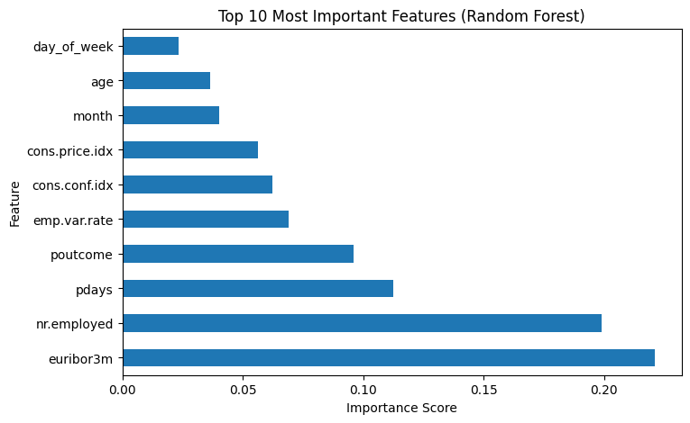
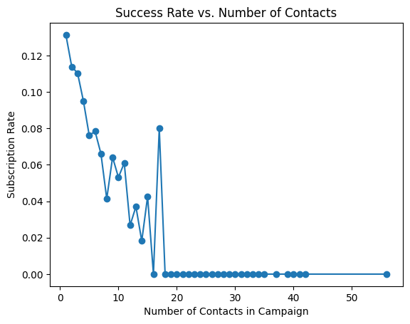
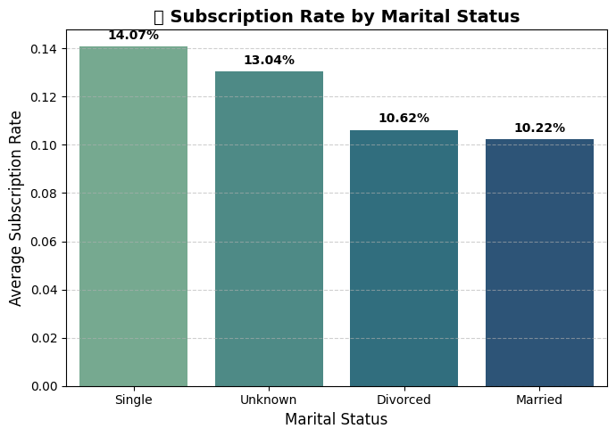
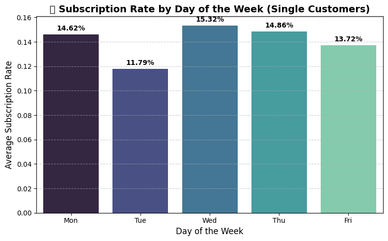
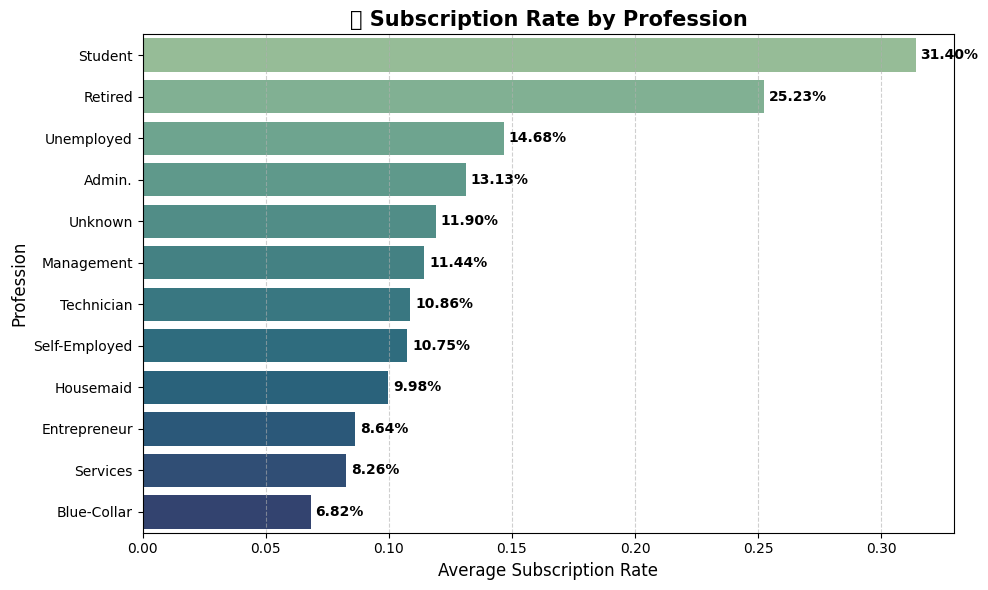
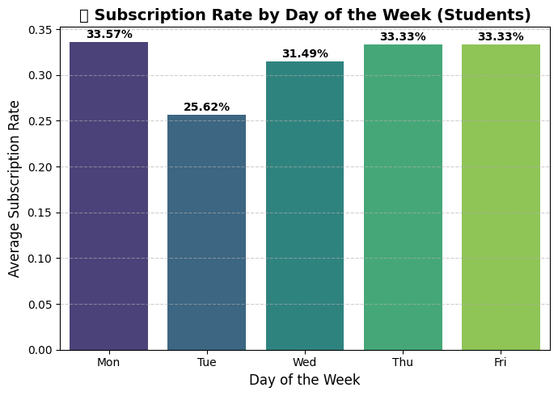

import pandas as pd
import numpy as np
from sklearn.model_selection import train_test_split, cross_val_score
from sklearn.preprocessing import LabelEncoder
from sklearn.ensemble import RandomForestClassifier
from sklearn.metrics import (
classification_report, confusion_matrix, accuracy_score, roc_auc_score
)
import matplotlib.pyplot as plt
import pickle
url_train = "https://raw.githubusercontent.com/byui-cse/cse450-course/master/data/bank.csv"
data = pd.read_csv(url_train, sep=",")
data.columns = data.columns.str.strip()
print("✅ Data loaded successfully.")
print("Shape:", data.shape)
print("Columns:", data.columns.tolist())✅ Data loaded successfully.
Shape: (37069, 20)
Columns: ['age', 'job', 'marital', 'education', 'default', 'housing', 'loan', 'contact', 'month', 'day_of_week', 'campaign', 'pdays', 'previous', 'poutcome', 'emp.var.rate', 'cons.price.idx', 'cons.conf.idx', 'euribor3m', 'nr.employed', 'y']
label_enc = LabelEncoder()
for col in data.select_dtypes(include=["object"]).columns:
if col != "y":
data[col] = label_enc.fit_transform(data[col])
data["y"] = data["y"].map({"yes": 1, "no": 0})
X = data.drop("y", axis=1)
y = data["y"]
print("✅ Encoding complete.")
print("Feature matrix shape:", X.shape)
print("Target vector shape:", y.shape)✅ Encoding complete.
Feature matrix shape: (37069, 19)
Target vector shape: (37069,)from sklearn.model_selection import train_test_split
X_train, X_test, y_train, y_test = train_test_split(
X, y, test_size=0.2, random_state=42, stratify=y
)
print("Training size:", X_train.shape)
print("Testing size:", X_test.shape)Training size: (29655, 19)
Testing size: (7414, 19)from sklearn.ensemble import RandomForestClassifier
from sklearn.metrics import accuracy_score, confusion_matrix, classification_report, roc_auc_score
from sklearn.model_selection import cross_val_score
import matplotlib.pyplot as plt
import pickle
rf = RandomForestClassifier(
n_estimators=200,
max_depth=10,
min_samples_leaf=25,
random_state=42,
n_jobs=-1
)
rf.fit(X_train, y_train)RandomForestClassifier(max_depth=10, min_samples_leaf=25, n_estimators=200,
n_jobs=-1, random_state=42)In a Jupyter environment, please rerun this cell to show the HTML representation or trust the notebook. On GitHub, the HTML representation is unable to render, please try loading this page with nbviewer.org.
RandomForestClassifier(max_depth=10, min_samples_leaf=25, n_estimators=200,
n_jobs=-1, random_state=42)cv_scores = cross_val_score(rf, X_train, y_train, cv=5, scoring="accuracy")
print(f"✅ Cross-Validation Accuracy (mean of 5 folds): {cv_scores.mean():.4f}")✅ Cross-Validation Accuracy (mean of 5 folds): 0.9005y_pred = rf.predict(X_test)
acc = accuracy_score(y_test, y_pred)
roc = roc_auc_score(y_test, rf.predict_proba(X_test)[:, 1])
print(f"✅ Test Accuracy: {acc:.4f}")
print(f"✅ ROC-AUC Score: {roc:.4f}")
print("\nConfusion Matrix:\n", confusion_matrix(y_test, y_pred))
print("\nClassification Report:\n", classification_report(y_test, y_pred))✅ Test Accuracy: 0.8987
✅ ROC-AUC Score: 0.8032
Confusion Matrix:
[[6461 111]
[ 640 202]]
Classification Report:
precision recall f1-score support
0 0.91 0.98 0.95 6572
1 0.65 0.24 0.35 842
accuracy 0.90 7414
macro avg 0.78 0.61 0.65 7414
weighted avg 0.88 0.90 0.88 7414
with open("bank_rf_model.pkl", "wb") as f:
pickle.dump(rf, f, protocol=5)
print("✅ Model saved as bank_rf_model.pkl")✅ Model saved as bank_rf_model.pklfeat_importances = pd.Series(rf.feature_importances_, index=X.columns)
feat_importances.nlargest(10).plot(kind="barh", figsize=(8,5))
plt.title("Top 10 Most Important Features (Random Forest)")
plt.xlabel("Importance Score")
plt.ylabel("Feature")
plt.show()
url_holdout = "https://raw.githubusercontent.com/byui-cse/cse450-course/master/data/bank_holdout_test.csv"
holdout = pd.read_csv(url_holdout, sep=",")
holdout.columns = holdout.columns.str.strip()
from sklearn.preprocessing import LabelEncoder
label_enc = LabelEncoder()
for col in holdout.select_dtypes(include=["object"]).columns:
holdout[col] = label_enc.fit_transform(holdout[col])
preds = rf.predict(holdout)
output = pd.DataFrame({"predictions": preds})
output.to_csv("predictions.csv", index=False)
print(f"✅ predictions.csv created with {len(output)} rows.")
display(output.head())✅ predictions.csv created with 4119 rows.| predictions | |
|---|---|
| 0 | 0 |
| 1 | 0 |
| 2 | 1 |
| 3 | 0 |
| 4 | 0 |
marital_day = data.groupby(["marital", "day_of_week"])["y"].mean().sort_values(ascending=False)
print(marital_day)
job_response = data.groupby("job")["y"].mean().sort_values(ascending=False)
print(job_response)marital day_of_week
3 4 0.181818
0 0.166667
2 0.166667
2 2 0.153208
3 0.148560
0 0.146217
4 0.137181
1 0.117874
3 1 0.117647
0 3 0.112529
1 2 0.112267
0 4 0.111940
1 4 0.109325
3 0.105073
0 2 0.105006
1 0.102593
0 0.098425
1 0 0.093823
1 0.090540
3 3 0.000000
Name: y, dtype: float64
job
8 0.313997
5 0.252282
10 0.146769
0 0.131277
11 0.119048
4 0.114426
9 0.108638
6 0.107535
3 0.099792
2 0.086391
7 0.082582
1 0.068195
Name: y, dtype: float64import matplotlib.pyplot as plt
campaign_effect = data.groupby("campaign")["y"].mean()
campaign_effect.plot(kind="line", marker="o", title="Success Rate vs. Number of Contacts")
plt.xlabel("Number of Contacts in Campaign")
plt.ylabel("Subscription Rate")
plt.show()
import matplotlib.pyplot as plt
import seaborn as sns
marital_response = data.groupby("marital")["y"].mean().sort_values(ascending=False)
marital_map = {
0: "Divorced",
1: "Married",
2: "Single",
3: "Unknown"
}
marital_response.index = marital_response.index.map(marital_map)
plt.figure(figsize=(7,5))
sns.barplot(x=marital_response.index, y=marital_response.values, palette="crest")
plt.title("💍 Subscription Rate by Marital Status", fontsize=14, weight='bold')
plt.xlabel("Marital Status", fontsize=12)
plt.ylabel("Average Subscription Rate", fontsize=12)
for i, val in enumerate(marital_response.values):
plt.text(i, val + 0.002, f"{val*100:.2f}%", ha='center', va='bottom', fontsize=10, weight='bold')
plt.grid(axis="y", linestyle="--", alpha=0.6)
plt.tight_layout()
plt.show()
print(marital_response)
/tmp/ipython-input-2049381768.py:18: FutureWarning:
Passing `palette` without assigning `hue` is deprecated and will be removed in v0.14.0. Assign the `x` variable to `hue` and set `legend=False` for the same effect.
sns.barplot(x=marital_response.index, y=marital_response.values, palette="crest")
/tmp/ipython-input-2049381768.py:30: UserWarning: Glyph 128141 (\N{RING}) missing from font(s) DejaVu Sans.
plt.tight_layout()
/usr/local/lib/python3.12/dist-packages/IPython/core/pylabtools.py:151: UserWarning: Glyph 128141 (\N{RING}) missing from font(s) DejaVu Sans.
fig.canvas.print_figure(bytes_io, **kw)
marital
Single 0.140730
Unknown 0.130435
Divorced 0.106193
Married 0.102200
Name: y, dtype: float64import matplotlib.pyplot as plt
import seaborn as sns
single_data = data[data["marital"] == 2]
single_day_response = single_data.groupby("day_of_week")["y"].mean().sort_index()
day_labels = {0: "Mon", 1: "Tue", 2: "Wed", 3: "Thu", 4: "Fri"}
single_day_response.index = single_day_response.index.map(day_labels)
plt.figure(figsize=(8,5))
sns.barplot(x=single_day_response.index, y=single_day_response.values, palette="mako")
plt.title("📅 Subscription Rate by Day of the Week (Single Customers)", fontsize=14, weight='bold')
plt.xlabel("Day of the Week", fontsize=12)
plt.ylabel("Average Subscription Rate", fontsize=12)
for i, val in enumerate(single_day_response.values):
plt.text(i, val + 0.002, f"{val*100:.2f}%", ha='center', va='bottom', fontsize=10, weight='bold')
plt.grid(axis="y", linestyle="--", alpha=0.6)
plt.tight_layout()
plt.show()
print(single_day_response)/tmp/ipython-input-2196252494.py:16: FutureWarning:
Passing `palette` without assigning `hue` is deprecated and will be removed in v0.14.0. Assign the `x` variable to `hue` and set `legend=False` for the same effect.
sns.barplot(x=single_day_response.index, y=single_day_response.values, palette="mako")
/tmp/ipython-input-2196252494.py:28: UserWarning: Glyph 128197 (\N{CALENDAR}) missing from font(s) DejaVu Sans.
plt.tight_layout()
/usr/local/lib/python3.12/dist-packages/IPython/core/pylabtools.py:151: UserWarning: Glyph 128197 (\N{CALENDAR}) missing from font(s) DejaVu Sans.
fig.canvas.print_figure(bytes_io, **kw)
day_of_week
Mon 0.146217
Tue 0.117874
Wed 0.153208
Thu 0.148560
Fri 0.137181
Name: y, dtype: float64day_counts = data["day_of_week"].value_counts().sort_index()
day_labels = {0: "Mon", 1: "Tue", 2: "Wed", 3: "Thu", 4: "Fri"}
day_counts.index = day_counts.index.map(day_labels)
print("📅 Number of records per day of the week:")
print(day_counts)
print("\nUnique days present in dataset:", data["day_of_week"].unique())📅 Number of records per day of the week:
day_of_week
Mon 7036
Tue 7657
Wed 7742
Thu 7287
Fri 7347
Name: count, dtype: int64
Unique days present in dataset: [1 3 4 2 0]import matplotlib.pyplot as plt
import seaborn as sns
job_response = data.groupby("job")["y"].mean().sort_values(ascending=False)
job_map = {
0: "Admin.",
1: "Blue-Collar",
2: "Entrepreneur",
3: "Housemaid",
4: "Management",
5: "Retired",
6: "Self-Employed",
7: "Services",
8: "Student",
9: "Technician",
10: "Unemployed",
11: "Unknown"
}
job_response.index = job_response.index.map(job_map)
plt.figure(figsize=(10,6))
sns.barplot(x=job_response.values, y=job_response.index, palette="crest")
plt.title("💼 Subscription Rate by Profession", fontsize=15, weight='bold')
plt.xlabel("Average Subscription Rate", fontsize=12)
plt.ylabel("Profession", fontsize=12)
for i, val in enumerate(job_response.values):
plt.text(val + 0.002, i, f"{val*100:.2f}%", va='center', fontsize=10, weight='bold')
plt.grid(axis="x", linestyle="--", alpha=0.6)
plt.tight_layout()
plt.show()
print(job_response)/tmp/ipython-input-570481752.py:27: FutureWarning:
Passing `palette` without assigning `hue` is deprecated and will be removed in v0.14.0. Assign the `y` variable to `hue` and set `legend=False` for the same effect.
sns.barplot(x=job_response.values, y=job_response.index, palette="crest")
/tmp/ipython-input-570481752.py:39: UserWarning: Glyph 128188 (\N{BRIEFCASE}) missing from font(s) DejaVu Sans.
plt.tight_layout()
/usr/local/lib/python3.12/dist-packages/IPython/core/pylabtools.py:151: UserWarning: Glyph 128188 (\N{BRIEFCASE}) missing from font(s) DejaVu Sans.
fig.canvas.print_figure(bytes_io, **kw)
job
Student 0.313997
Retired 0.252282
Unemployed 0.146769
Admin. 0.131277
Unknown 0.119048
Management 0.114426
Technician 0.108638
Self-Employed 0.107535
Housemaid 0.099792
Entrepreneur 0.086391
Services 0.082582
Blue-Collar 0.068195
Name: y, dtype: float64import matplotlib.pyplot as plt
import seaborn as sns
students = data[data["job"] == 8]
student_day_response = students.groupby("day_of_week")["y"].mean().sort_index()
day_labels = {0: "Mon", 1: "Tue", 2: "Wed", 3: "Thu", 4: "Fri"}
student_day_response.index = student_day_response.index.map(day_labels)
plt.figure(figsize=(7,5))
sns.barplot(x=student_day_response.index, y=student_day_response.values, palette="viridis")
plt.title("🎓 Subscription Rate by Day of the Week (Students)", fontsize=14, weight='bold')
plt.xlabel("Day of the Week", fontsize=12)
plt.ylabel("Average Subscription Rate", fontsize=12)
for i, val in enumerate(student_day_response.values):
plt.text(i, val + 0.002, f"{val*100:.2f}%", ha='center', va='bottom', fontsize=10, weight='bold')
plt.grid(axis="y", linestyle="--", alpha=0.6)
plt.tight_layout()
plt.show()
print("Average subscription rate by day (students only):")
print(student_day_response)/tmp/ipython-input-4051878152.py:16: FutureWarning:
Passing `palette` without assigning `hue` is deprecated and will be removed in v0.14.0. Assign the `x` variable to `hue` and set `legend=False` for the same effect.
sns.barplot(x=student_day_response.index, y=student_day_response.values, palette="viridis")
/tmp/ipython-input-4051878152.py:28: UserWarning: Glyph 127891 (\N{GRADUATION CAP}) missing from font(s) DejaVu Sans.
plt.tight_layout()
/usr/local/lib/python3.12/dist-packages/IPython/core/pylabtools.py:151: UserWarning: Glyph 127891 (\N{GRADUATION CAP}) missing from font(s) DejaVu Sans.
fig.canvas.print_figure(bytes_io, **kw)
Average subscription rate by day (students only):
day_of_week
Mon 0.335664
Tue 0.256250
Wed 0.314917
Thu 0.333333
Fri 0.333333
Name: y, dtype: float64import pandas as pd
from sklearn.preprocessing import LabelEncoder
test = pd.read_csv("https://raw.githubusercontent.com/byui-cse/cse450-course/master/data/bank_holdout_test.csv", sep=",")
test.columns = test.columns.str.strip()
print("✅ Holdout data loaded successfully.")
print("Shape:", test.shape)
print("Columns:", test.columns.tolist())
label_enc = LabelEncoder()
for col in test.select_dtypes(include=["object"]).columns:
test[col] = label_enc.fit_transform(test[col])
print("✅ Encoding complete on test data.")
predictions = rf.predict(test)
my_predictions = pd.DataFrame(predictions, columns=["predictions"])
my_predictions.to_csv("team8-module2-predictions.csv", index=False)
print("✅ CSV file created successfully!")
print("File preview:")
print(my_predictions.head())
print("\nNumber of predictions:", len(my_predictions))✅ Holdout data loaded successfully.
Shape: (4119, 19)
Columns: ['age', 'job', 'marital', 'education', 'default', 'housing', 'loan', 'contact', 'month', 'day_of_week', 'campaign', 'pdays', 'previous', 'poutcome', 'emp.var.rate', 'cons.price.idx', 'cons.conf.idx', 'euribor3m', 'nr.employed']
✅ Encoding complete on test data.
✅ CSV file created successfully!
File preview:
predictions
0 0
1 0
2 1
3 0
4 0
Number of predictions: 4119
label_enc = LabelEncoder()
for col in data.select_dtypes(include=["object"]).columns:
if col != "y":
data[col] = label_enc.fit_transform(data[col])
data["y"] = data["y"].map({"yes": 1, "no": 0})
X = data.drop("y", axis=1)
y = data["y"]
print("✅ Encoding complete.")
print("Feature matrix shape:", X.shape)
print("Target vector shape:", y.shape)import pandas as pd
preds = pd.read_csv("https://raw.githubusercontent.com/byui-cse/cse450-course/master/data/bank.csv")
print(preds["y"].value_counts(normalize=True))y
no 0.886482
yes 0.113518
Name: proportion, dtype: float64